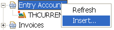
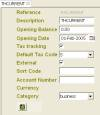
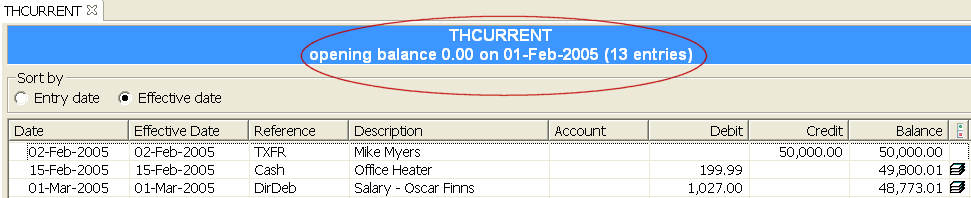
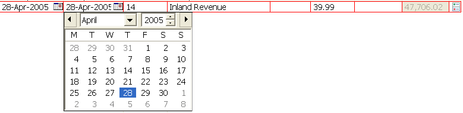
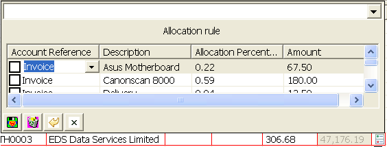
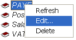
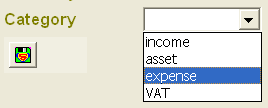

|
Entry Accounts

The Book Explorer shows a number of Entry accounts, or if none is shown,
you simply click on the Entry account node with your right mouse button to
bring up the menu, then select the "Insert..." button
to create a new
entry account. This is typically a current account, or a savings account you
have with your bank, although you can also create an Entry account without an
external account, like one which lists all your expenses etc. Click on this
icon
 to
see the entry screen for an Entry account. Note that you can enter your
opening balance, and the date this balance is relevant for. It is important to
note that running balance shown in the transactions section below will take
into account this date, so you should make sure it is earlier than the first
entry in the list of transactions, unless you know for sure this is the
balance for that date from the statement of your bank account. The blue title
at the top of your transaction list will display the opening balance and the
date this balance is relevant for, as a reminder that you should take this
into account when looking at the running balances for the transactions.

Transaction Editor
You can call up the editor for the row you select be either double clicking
on it or by pressing CONTROL+E. The editor should superimpose exactly on the
fields for that entry. The following columns can be entered:
- Invoice Date: the date the entry is recorded into your account. Note that this
date is different from the transaction (effective) date, which is the date the money
actually leaves or enters your account. You should use this column to put in
the date you put in your cheque, or the date when you actually withdraw
money from your bank account, even though this is not the date shown in your
bank statement
- Transaction Date: the date in which the transaction is actually effective.
This date should be used to reconcile against your bank statement
- Reference: free format field to denote a reference, say an invoice
number, a cheque number, or other free format text of your choice
- Description: the description of the transaction. This field is used in
reports and should be used to identify the transaction visually
- Account: use this field if you are transferring the amount between your
accounts. These internal transfers can be excluded from the business reports
for reporting purposes
- Debit: put the amount into this column if the amount is a payment
- Credit: put the amount into this column if the amount is a deposit or
income
- Balance: this field is automatically calculated as the running balance
and is not editable
- Allocation popup: popup up the Allocator to specify the ledger postings
you want to make. The Allocator has a dropdown of the pre-configured
Allocation Rules you can use to send percentages of your total amount into
different ledger accounts. This facility is useful if you are entering tax
related transactions

Popup Calendars can be shown for the first two date columns by clicking on
the calendar icons on the entry editor, or by using the key bindings
CONTROL+DOWN ARROW.
The Reference and Description fields have associated with them pop ups of
memorised entries which have been entered before. Also, when you tab out of
the description field, the application will attempt to fill in the amount the
the Allocations automatically from the last entry of the same description.
These features are designed to aid speedy data entry.
Allocator Popup
The Allocator can be brought up by either clicking on the allocation button
in the last column of the entry editor above, or you can use ALT+L key
binding. The Allocator shows a number of empty rows, each of which will
represent a percentage of your total amount, and the Ledger Account that
percentage will be debited or credited against. Built in Allocation Rules
should make it easy for you to enter tax related entries
 The
first column controls the Ledger account the row will affect. Ledger accounts
do not have to be pre-created, as you can type in a new name and the ledger
will be created automatically. However, you will have to right click on the
Ledger Account subsequently and select Edit...
 in
order to specify whether that Ledger Account falls into the category Income,
Expense, Asset or VAT
. The
categories are used for reporting purposes. |
Transcraft Home
My Accountant Home
Home
Legends
Overview
Entry Accounts
Ledger Accounts
Invoices
Reports
Scheduled Entries
Allocation Rules
Password Protection
Preferences
Year end operation
Ad hoc Reporting
Contact us
|